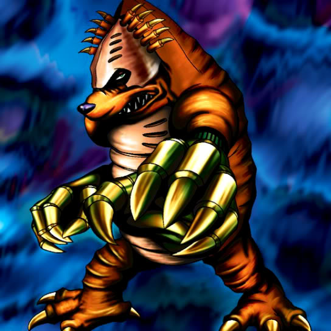

Mech Mole Zombie

Description: "When turned face-up in battle, transforms an opponent into a ZOMBIE monster."
STATS
ATK: 500
DEF: 400DECK COST
Deck Cost per Card: 14EFFECT NOT IMPLEMENTED
Fusion List (35 Possible Fusions)
- Mech Mole Zombie + Abyss Flower = Wood Remains
- Mech Mole Zombie + Arlownay = Wood Remains
- Mech Mole Zombie + Boo Koo = Magical Ghost
- Mech Mole Zombie + Curtain of the Dark Ones = Magical Ghost
- Mech Mole Zombie + Dark Plant = Wood Remains
- Mech Mole Zombie + Darkworld Thorns = Pumpking the King of Ghosts
- Mech Mole Zombie + Djinn the Watcher of the Wind = Magical Ghost
- Mech Mole Zombie + Dragon Statue = Dragon Zombie
- Mech Mole Zombie + Dragon Zombie = Skelgon
- Mech Mole Zombie + Fire Eye = Flame Ghost
- Mech Mole Zombie + Fire Reaper = Flame Ghost
- Mech Mole Zombie + Griggle = Wood Remains
- Mech Mole Zombie + Hurricail = Magical Ghost
- Mech Mole Zombie + Hyo = Zombie Warrior
- Mech Mole Zombie + Kagemusha of the Blue Flame = Zombie Warrior
- Mech Mole Zombie + Kageningen = Zombie Warrior
- Mech Mole Zombie + Laughing Flower = Wood Remains
- Mech Mole Zombie + M-Warrior #1 = Zombie Warrior
- Mech Mole Zombie + Mammoth Graveyard = Great Mammoth of Goldfine
- Mech Mole Zombie + Man Eater = Wood Remains
- Mech Mole Zombie + Morphing Jar = Stone Ghost
- Mech Mole Zombie + Mystical Sheep #2 = Mystical Sheep #1
- Mech Mole Zombie + One-Eyed Shield Dragon = Dragon Zombie
- Mech Mole Zombie + Oscillo Hero = Armored Zombie
- Mech Mole Zombie + Phantom Dewan = Magical Ghost
- Mech Mole Zombie + Pot the Trick = Stone Ghost
- Mech Mole Zombie + Prisman = Stone Ghost
- Mech Mole Zombie + Rainbow Flower = Wood Remains
- Mech Mole Zombie + Left Arm of the Forbidden One = Magical Ghost
- Mech Mole Zombie + Skelgon = Curse of Dragon
- Mech Mole Zombie + Swordsman from a Foreign Land = Zombie Warrior
- Mech Mole Zombie + The Judgement Hand = Armored Zombie
- Mech Mole Zombie + Unknown Warrior of Fiend = Zombie Warrior
- Mech Mole Zombie + White Dolphin = Corroding Shark
- Mech Mole Zombie + Yamatano Dragon Scroll = Dragon Zombie